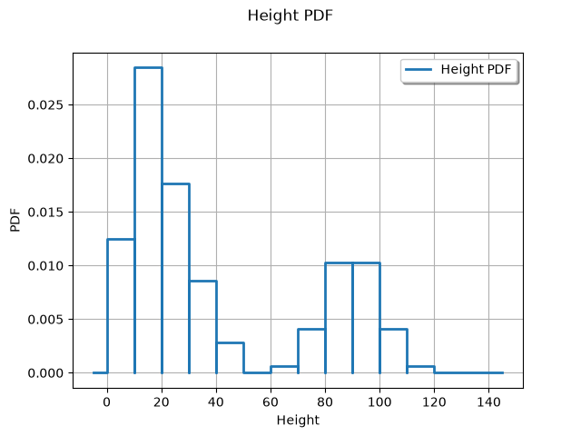
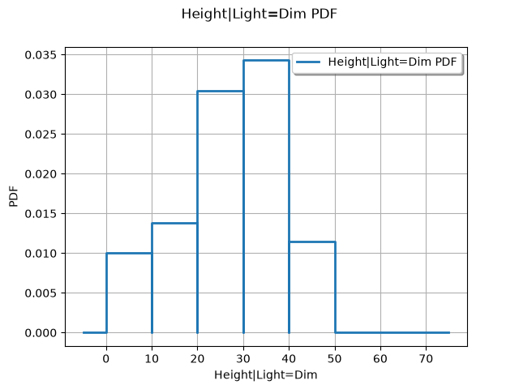
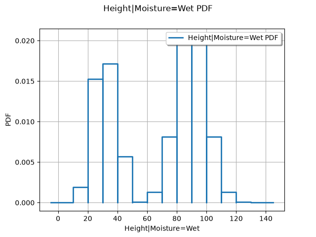
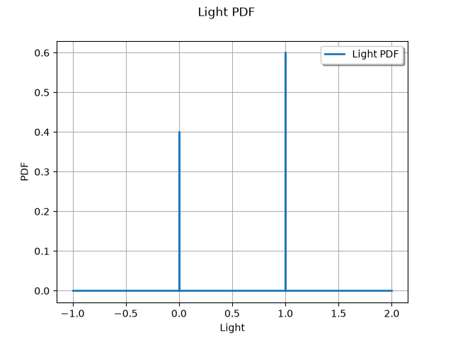

Note
Click here to download the full example code
Plant growth¶
The study presented in that section focuses on the growth of particular plant (not specified). The objective is to predict which height will be reached by the plant … for example in order to evaluate the risk that the plant might require un greater jag on the balcony …
The problem is that we have no data on the height usually reached by this kind of plant, which prohibits any use of statistics tools … So … what ? Yet we have the following information:
we know the influence of the quality of the light and the influence of the air moisture rate on the plant growth,
we can quantify the quality of the light we have at home and also the air moisture rate where the plant lives.
…. so we can model the plant growth thanks to a Bayes net and then have access to the variability of its final height!
Let us imagine (for the example purpose):
Some meteorological data (tropical place?):
the balcony is in plain light 3 times out of 4,
in the darkness, the air is moist 8 times out of 10,
in plain light, the air is dry 6 times out of 10.
Some remembrance of biology trainings:
in plain light, if the air is moist, the plant is very happy: it grows 90cm on average with a variation of $pm$ 10 cm. If the air is too dry, it will not grow more than 30 cm but we reasonnably can expect about a 15 cm growth.
in the darkness, if the air is too dry, the plant suffers: it will not grow more than 20 cm and might die as well! If the air is moist, it will usually grow about 30 cm, at least 15cm but not more than 50 cm.
from __future__ import print_function
import openturns as ot
import otagrum
import pyAgrum as gum
import pyAgrum.lib.notebook as gnb
from openturns.viewer import View
from matplotlib import pylab as plt
# We have to build the Bayes Net now. There are 3 variables that will be named : $Light$, $Moisture$ and $Height$.
Create variables
light = gum.LabelizedVariable("Light", "quality of light", 0)
moisture = gum.LabelizedVariable("Moisture", "quantity of moisture", 0)
height = gum.DiscretizedVariable("Height", "plant growth")
Both variables Light and Moisture are categorical variables whith the following attributes:
Light has 2 attributes: Dim which refers to the darkness and Bright which refers to plain light situations,
Moisture has 2 attributes: Dry which refers to dry air situations and Wet which refers to wet air situations.
Height is a continuous variable which has to be discretized for the Bayes Net use.
# Create labels and ticks
light has 2 attributes : Dim and Bright
light.addLabel("Dim")
light.addLabel("Bright")
Out:
(gum::LabelizedVariable@0x561f2bc80550) Light<Dim,Bright>
moisture has 2 attributes : Dry and Wet
moisture.addLabel("Dry")
moisture.addLabel("Wet")
Out:
(gum::LabelizedVariable@0x561f2bc85b00) Moisture<Dry,Wet>
height is a discretized variable
[height.addTick(i) for i in range(0, 150, 10)]
height.domainSize()
Out:
14
Furthermore, there are several influence links : Light on Moisture, (Light,Moisture) on Height.
# Create the net
bn = gum.BayesNet("Plant Growth")
Add variables
indexLight = bn.add(light)
indexMoisture = bn.add(moisture)
indexHeight = bn.add(height)
Add arcs
bn.addArc(indexLight, indexMoisture)
bn.addArc(indexLight, indexHeight)
bn.addArc(indexMoisture, indexHeight)
bn
The next step is the quantification of the Bayes net.
The variable $Light$ is quantified as follows:
Light=Dim with a probability of 0.25,
Light=Bright with a probability of 0.75.
Create conditional probability tables light conditional probability table
bn.cpt(indexLight)[:]= [0.25, 0.75]
gnb.showPotential(bn.cpt(indexLight))
Out:
<IPython.core.display.HTML object>
- The influence of $Light$ on $Moisture$ is modelized by:
when $Light=Dim$ then $Moisture=Dry$ with a probability of 0.2 and $Moisture=Wet$ with a probability of 0.8,
when $Light=Bright$ then $Moisture=Dry$ with a probability of 0.6 and $Moisture=Wet$ with a probability of 0.4.
moisture conditional probability table We show the antecedents of moisture with the order in which they were declared
bn.cpt(indexMoisture)[{'Light' : 'Dim'}] = [0.2, 0.8]
bn.cpt(indexMoisture)[{'Light' : 'Bright'}] = [0.6, 0.4]
gnb.showPotential(bn.cpt(indexMoisture))
Out:
<IPython.core.display.HTML object>
- The influence of (Light, Moisture) on Height is modelized by:
when Light=Dim and Moisture=Dry then Height follows a Uniform(min=0, max=20) distribution,
when Light=Dim and Moisture=Wet then Height follows a Triangular(min=15, mod=30, max=50) distribution,
when Light=Bright and $Moisture=Dry$ then $Height$ follows a Triangular(min=0, mod=15, max=30) distribution,
when Light=Bright and $Moisture=Wet$ then $Height$ follows a Normal(mu=90, sigma=10) distribution.
height has a conditional probability table We give here its conditional distributions
distribution when Dim and Dry
heightWhenDimAndDry = ot.Uniform(0.0, 20.0)
# distribution when Dim and Wet
heightWhenDimAndWet = ot.Triangular(15.0, 30.0, 50.0)
# distribution when Bright and Dry
heightWhenBrightAndDry = ot.Triangular(0.0, 15.0, 30.0)
# distribution when Bright and Wet
heightWhenBrightAndWet = ot.Normal(90.0, 10.0)
We have to enter some OT distributions whithin aGrUM conditional probability tables We show the antecedents of height with the order in which they were declared The new class Utils from otagrum is able to marry OT distributions and Agrum conditional probability tables
bn.cpt(indexHeight)[{'Light': 'Dim', 'Moisture': 'Dry'}] = otagrum.Utils.Discretize(heightWhenDimAndDry, height)[:]
bn.cpt(indexHeight)[{'Light': 'Bright', 'Moisture': 'Dry'}] = otagrum.Utils.Discretize(heightWhenBrightAndDry, height)[:]
bn.cpt(indexHeight)[{'Light': 'Dim', 'Moisture': 'Wet'}] = otagrum.Utils.Discretize(heightWhenDimAndWet, height)[:]
bn.cpt(indexHeight)[{'Light': 'Bright', 'Moisture': 'Wet'}] = otagrum.Utils.Discretize(heightWhenBrightAndWet, height)[:]
gnb.showPotential(bn.cpt(indexHeight))
Out:
<IPython.core.display.HTML object>
We can study the plant growth variability in different situations like:
I put my plant on my balcony; in that situation, I set none evidence inside the Bayes net.
I put my plant in a place where it is dark all time (in my cellar?); in that situation, I set one evidence inside the Bayes net: $Light=Dim$.
I put my plant in a place where it is moist all time (in my bathroom?); in that situation, I set one evidence inside the Bayes net: $Moisture=Wet$.
Variability of the plant growth on my balcony
ie = gum.LazyPropagation(bn)
h_dist = otagrum.Utils.FromMarginal(ie.posterior("Height"))
print("Probability (height > 40cm) = ", 1.0 - h_dist.computeCDF(40.0))
View(h_dist.drawPDF())

Out:
Probability (height > 40cm) = 0.32857134257593246
<openturns.viewer.View object at 0x7f72b73a3eb0>
Variability of the plant growth in my cellar
ie = gum.LazyPropagation(bn)
ie.setEvidence({'Light':'Dim'})
h_dist_dim = otagrum.Utils.FromMarginal(ie.posterior("Height"))
h_dist_dim.setDescription(['Height|Light=Dim'])
print("Probability (height > 40cm)|Light=Dim = ", 1.0 - h_dist_dim.computeCDF(40.0))
View(h_dist_dim.drawPDF())

Out:
Probability (height > 40cm)|Light=Dim = 0.11428571428571421
<openturns.viewer.View object at 0x7f72b720b3d0>
Variability of the plant growth when the atmosphere is very wet
ie = gum.LazyPropagation(bn)
ie.setEvidence({'Moisture':'Wet'})
h_dist_wet = otagrum.Utils.FromMarginal(ie.posterior("Height"))
h_dist_wet.setDescription(['Height|Moisture=Wet'])
print("Probability (height > 40cm)|Moisture=Wet = ", 1.0 - h_dist_wet.computeCDF(40.0))
View(h_dist_wet.drawPDF())

Out:
Probability (height > 40cm)|Moisture=Wet = 0.6571426851518647
<openturns.viewer.View object at 0x7f72b7344460>
Get the distribution of the variable “Light”
l_dist_wet = otagrum.Utils.FromPotential(ie.posterior("Light"))
print(l_dist_wet)
View(l_dist_wet.drawPDF())

Out:
UserDefined({x = [0], p = 0.4}, {x = [1], p = 0.6})
<openturns.viewer.View object at 0x7f72b73faee0>
Get the joint distribution [H, M]
ie = gum.LazyPropagation(bn)
ie.addJointTarget({"Height", "Moisture"})
ie.makeInference()
h_m_dist = otagrum.Utils.FromPotential(ie.jointPosterior({"Height", "Moisture"}))
print(h_m_dist.getDescription())
print(h_m_dist.getMarginal(0))
plt.show()
Out:
[Moisture,Height]
UserDefined({x = [0], p = 0.5}, {x = [1], p = 0.5})
Total running time of the script: ( 0 minutes 0.405 seconds)